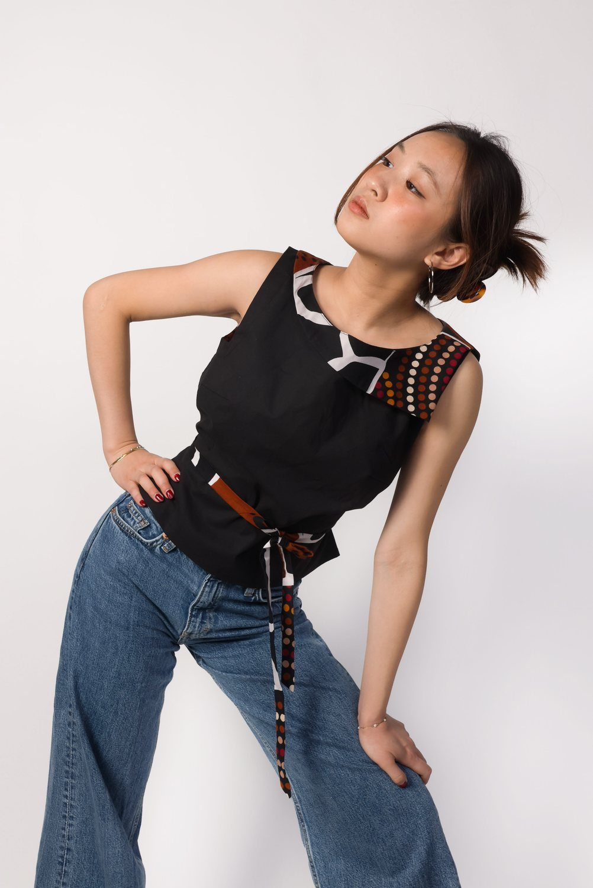
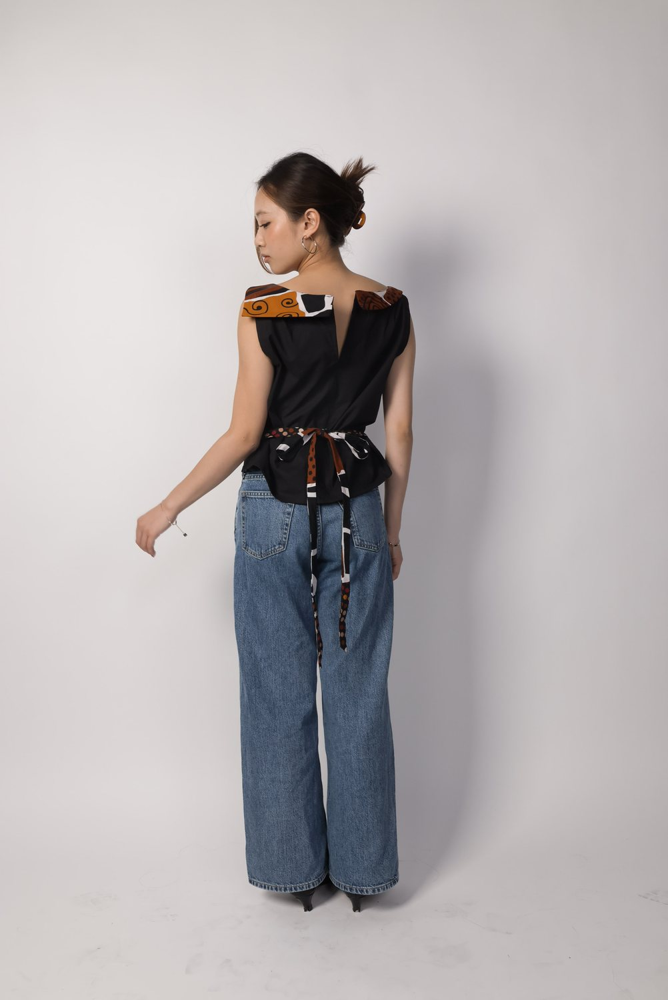
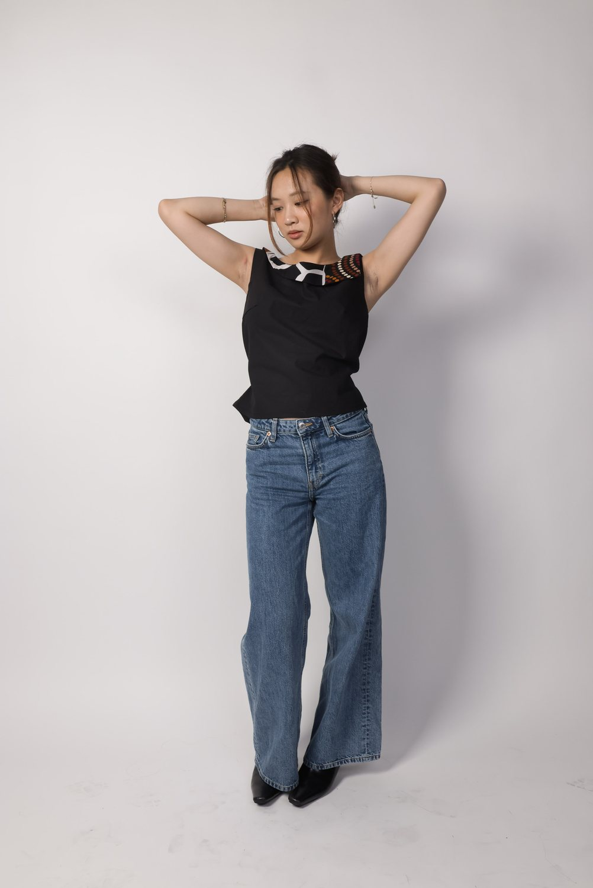
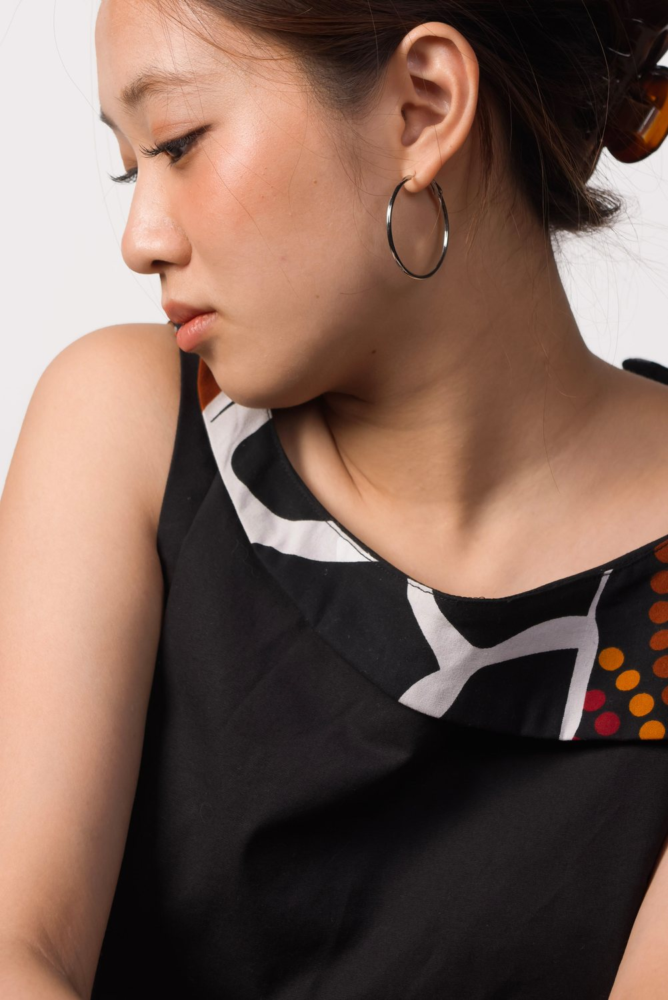
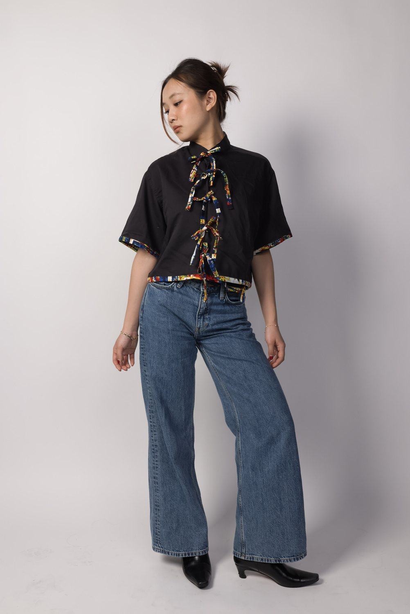
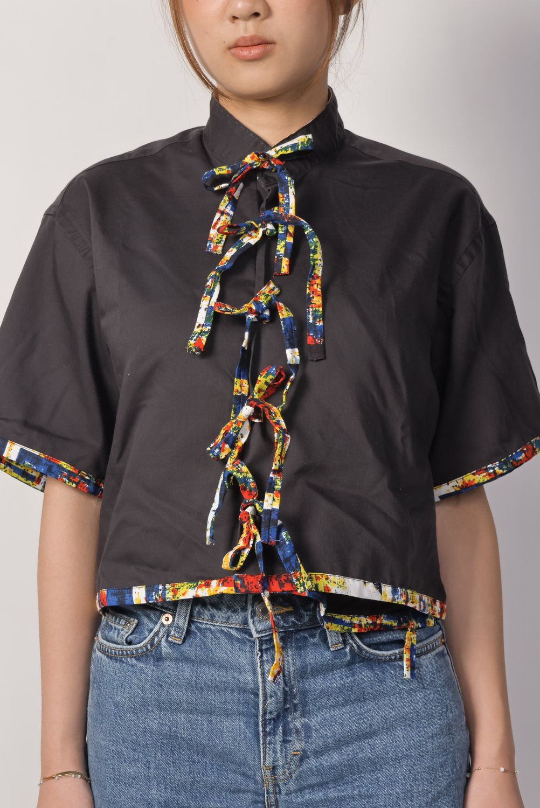
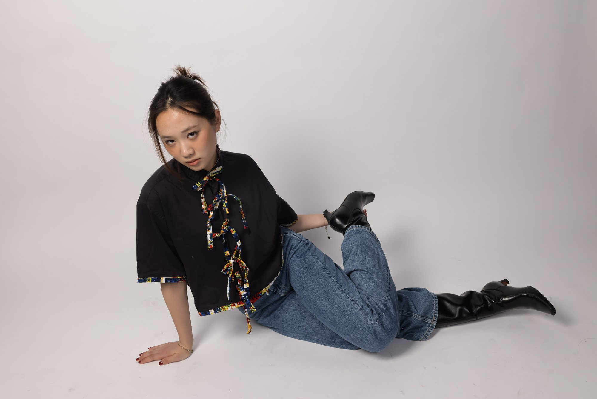
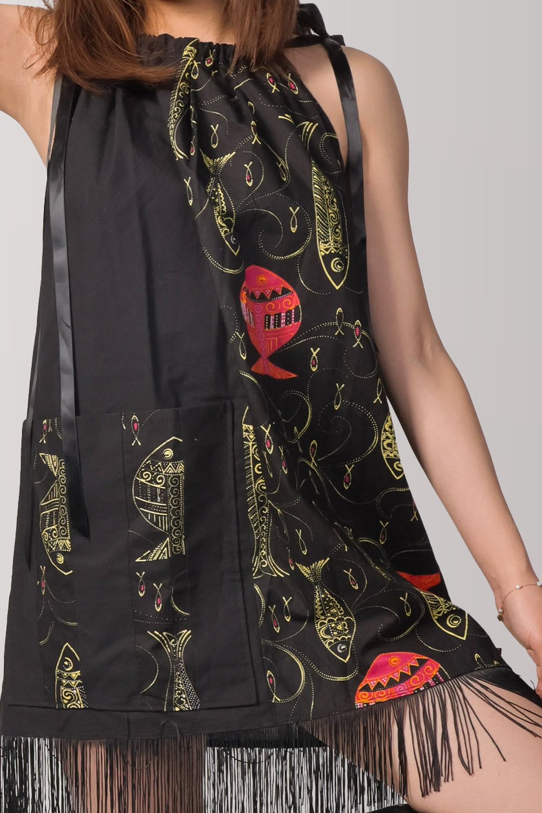
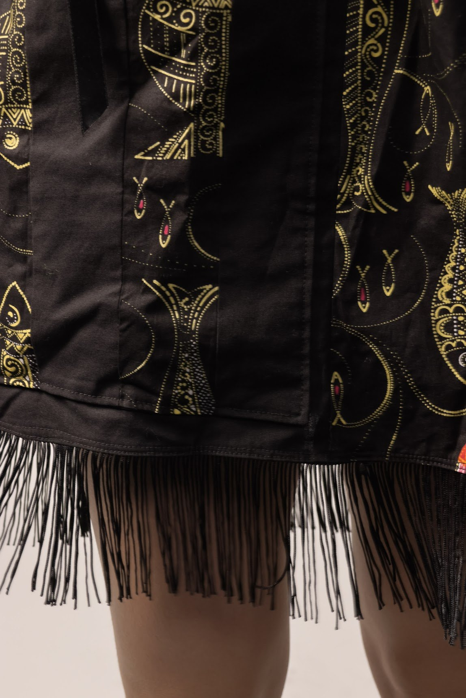

Shop




THE REWORKED TOP
Bold, effortless and anything but ordinary.
This one-of-a-kind top combines a striking silhouette with unique details, turning a simple wardrobe essential into a statement piece. Crafted from repurposed textiles, it reflects TUNZA’s vision of giving forgotten materials a new purpose.
Designed to celebrate individuality and creativity, this piece proves that conscious fashion doesn’t have to compromise on style.



THE REWORKED SHIRT
A classic silhouette with an unexpected twist.
This one-of-a-kind shirt combines a relaxed fit with vibrant patterned details, transforming a timeless wardrobe essential into a bold statement piece. The colorful accents along the collar, sleeves and front add a playful contrast to the dark fabric, creating a look that feels both effortless and expressive.
Crafted from repurposed textiles, this design reflects TUNZA’s commitment to creativity, individuality and giving existing materials a second life.
Reworked with purpose. Designed to stand out.


THE REWORKED DRESS
Playful, bold and made to move.
This one-of-a-kind dress combines a relaxed, sleeveless silhouette with a striking golden print and a fringe hem that sways with every step. Panels of plain black fabric balance the pattern, turning a simple shape into a true statement piece.
Crafted from repurposed textiles, this design reflects TUNZA’s vision of giving forgotten materials a new purpose and celebrating individuality in every detail.
Reworked with purpose. Made to be noticed.